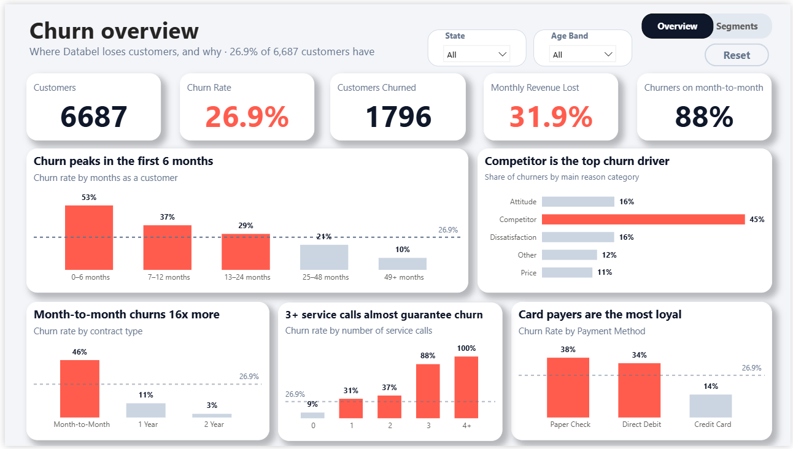
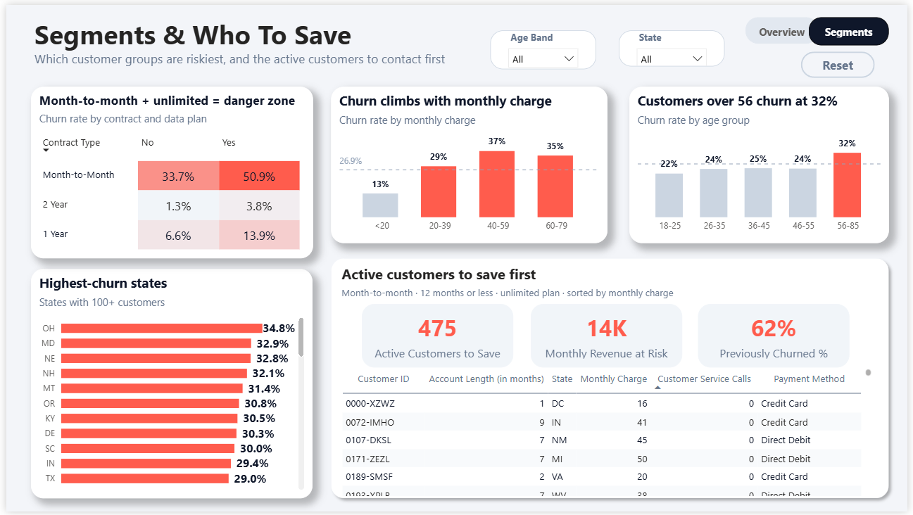

Most churn dashboards stop at the overall rate. I wanted to answer three questions: who leaves, why, and what a retention team could do on Monday morning. The report has an overview page (where and why churn happens) and a segments page (the riskiest groups, plus a list of active customers to contact first).
Power BI · DAX · Power Query
Telecom customer churn analysis
A two-page Power BI dashboard on 6,687 telecom customers: why they leave, which signals warn of it, and which active customers to contact first.

Page 1, churn overview: KPIs, churn by tenure, churn reasons, and churn by contract, service calls and payment method.

Page 2, segments: the riskiest customer groups and the active customers to contact first.
Overview
Key findings
46.3%churn for month-to-month customers, vs 2.8% on two-year contracts — and they are 88% of all churners
31.9%of monthly revenue lost to churn, against 26.9% of customers lost — the people leaving pay more than average
53%churn in the first 6 months, falling to about 10% after four years
88%churn once a customer has made 3 service calls (nearly 100% at 4+), vs 9% for customers with none
50.9%churn for month-to-month customers on an unlimited data plan, vs 1.3% for two-year customers without one
45%of churners named a competitor as their reason — the most common by far
Recommendation
- Convert month-to-month customers to annual contracts early, in the first 6 to 12 months when churn is highest.
- Escalate any customer on a second service call to retention before it reaches three.
- Start with the save list: 475 active customers who are month-to-month, in their first year, on an unlimited plan (about 14K in monthly revenue). That profile has churned at 62% and accounts for 43% of all churners.
How it's built
- Power Query: de-duplicated customers, built tenure, charge, age and service-call bands with sort-order columns.
- DAX: churn rate, revenue lost %, month-to-month share of churners, and the measures behind the save list.
- Design: every chart compares rates, not counts, against a dashed overall-average line, and one accent colour is reserved for the problem. Chart titles state the finding.
- Interactivity: slicers, a reset button, page navigation, and drill-down from churn category to churn reason.
Limits of the data
The data is a single snapshot with no dates, so it can't show trends or signup-month cohorts. It shows association, not causation: nothing here proves a retention offer would change behaviour. The save list is a rule-based filter, not a prediction model, and the “Other” churn reason includes 27 churners with no recorded reason.
What I'd add next
Train a churn model (logistic regression or gradient boosting) to score active customers instead of using a fixed rule, then run a small A/B test of a retention offer on the save list. Adding cost data would let me estimate whether each offer pays for itself.